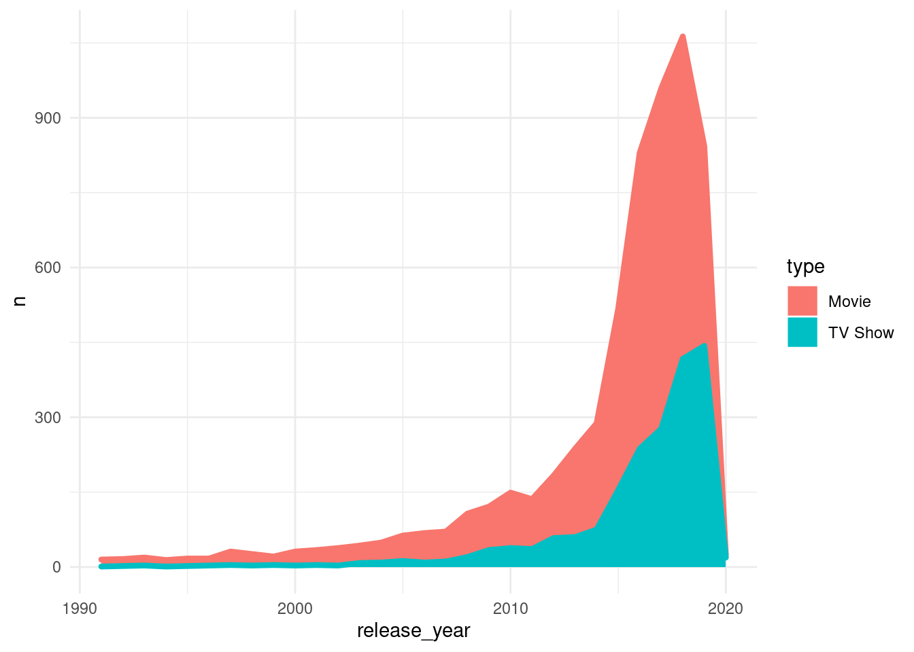

Data Storytelling
Comment raconter efficacement une histoire avec des données
Un graphique sur 2 colonnes
Un texte explicatif : praesent magna orci, lobortis sit amet libero vel, maximus molestie dolor. Donec egestas non nulla nec scelerisque. Sed vel magna leo. Pellentesque gravida augue quis neque porta, nec posuere justo vestibulum.
Section Video